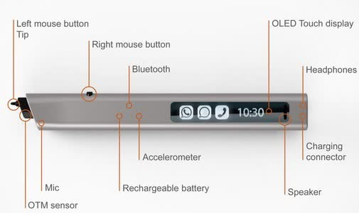
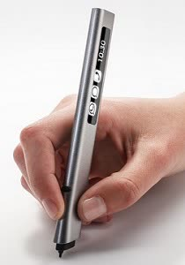
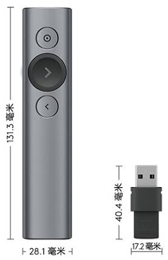
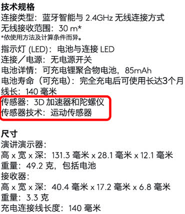

这是一个我N年前的想法，但一直没有实现。所以说，这也是一个“就差一个软件工程师了”的悲伤的故事（其实还缺一个硬件工程师）。
xPen
鼠标是图形用户界面的主要输入设备。其实在鼠标（1968年原型诞生）之前，还有一种光笔（1955年）的设备。光笔需要直接在屏幕上操作，其实跟现在的电容笔+触摸板用法差不多，但显然不如鼠标放在桌上操作舒服，现在很少有人听说过这种设备了。笔式输入设备的特点是能提供类似书写的体验，用鼠标写一个字的体验是相当别扭的，但是如果把鼠标做成一个笔的形状，工作原理没有变化，但感觉上就会方便多了。
近些年的Surface，iPad等设备也有配套的笔，更早就有PC上用来绘画的的数码笔/绘图笔（Wacom），但普通用户对这些设备都接触不多。这些笔都要有一个 板子 来配套，与传统的纸笔对应，一是不方便，二是增加了整体成本。另外，可能用户对笔式输入设备的印象局限在手写或绘图场景，其实它是可以像鼠标那样来操作GUI的光标的，但用户购买这些设备显然是为了手写或绘图。
我曾经买过一个几百元的低档数位板，它的鼠标模式需要一直将笔 悬着保持离板子几毫米的距离，用起来是很累的，其实如果没有运行支持绘图的应用，完全可以将笔在板子上移动的操作对应为鼠标的移动光标操作。
我的想法是设计一种笔式的输入设备，暂叫 xPen 吧（好没创意），不再需要配套的 板子，只要笔本身即可；当然要以无线的方式连接PC，也可以用到触摸平板等设备上，但主要是面向PC用户，目标是取代鼠标，既提供基础的移动光标功能，也提供手写和绘图等高级功能。
应用场景
这样说来 xPen 比现有的笔式设备只是少了配套的 板子，功能是相近的，要想让普通用户接受，除了价格和使用体验，还要讲好故事，介绍一些更合适的应用场景。在传统的PC办公场景，要把代替鼠标的移动光标功能作为主要功能，而手写和绘图则是增强功能，这样才能引起普通用户的兴趣，而不只是笔式设备的传统用户；教育应该是最适合的一个场景，因为数理化等学科的公式符号等不容易通过键盘鼠标输入，对手写功能有比较强的需求；课堂和会议演示中在ppt手写批注也是一个比较好的场景，理想的情况是能够取代黑板的位置。
结构设计
设计xPen，首先需要了解一下我们熟悉的鼠标的工作原理。鼠标的有两个主要组件：定位组件，左右两个按键和中间的滚轮（也是中键）。定位组件是底部的光电模组，激光照射在桌面上，反射到光电传感器，通过比较传感器相邻两次接收的图像，可以计算出鼠标的位移变化$(\Delta x, \Delta y)$，即可控制屏幕上的光标按比例移动。
比较微妙的是，
- 鼠标的物理位置与屏幕光标是相对的，如果拿起鼠标移动一段距离，屏幕上的光标一般是保持不动的；再把鼠标放到桌面上移动，屏幕的光标则从刚才保持的位置开始移动。
- 鼠标的物理移动距离与屏幕光标的移动距离有一个换算比例，用户很快就能适应这个换算过程。
- 鼠标的形状设计隐含着 前后朝向 的区分。
与鼠标不同，传统的笔式设备定位功能是靠配套的 板子 实现的。对于近几年常见的触摸平板，使用手指或笔时，定位都是屏幕的绝对位置；虽然绘图板与屏幕直接存在位置比例变换，但对绘图板而言也是绝对定位。绝对定位的情况就不需要考虑前后朝向的问题了。
基于光电原理
没有了 板子 ，xPen如何实现定位呢？其实已经有把鼠标光电模组小型化后改成的“笔”，原理跟鼠标一样，比如下面两种：
下面的两个视频，介绍的是国外的 Phree。 这个产品做的很接近我的想法，但感觉多了额外的功能。
基于陀螺仪，加速度计
姿态传感器有3轴（陀螺仪或加速度计，x/y/z三个方向）、6轴（陀螺仪+加速度计）、9轴（陀螺仪+加速度计+磁场），在手机和平板中比较普遍了，无人机也是用它来定位和导航的（结合GPS）。陀螺仪（Gyroscope，测量角速度）和加速度计（Accelerometer）是根据力学原理来测量和计算位置的变化的。
下面几篇文章就是用位置传感器实现空中鼠标或笔的功能：
- MobiHeld09 - PhonePoint Pen - using mobile phones to write in air 和 MobiSys11 - Using mobile phones to write in air，使用的是诺基亚N95；
- THMS15 - GyroPen - Gyroscopes for Pen-Input With Mobile Phones（Youtube有演示视频）；
- 上海交大08 - 基于微加速度计的Air-Mouse的研究 - 姜晓波
- 中科大09 - 基于加速度传感器的电子笔系统的设计 - 王庆召
- 华中科技14 - 基于MEMS惯性传感器的空中输入笔研究 - 赵威
- 华中科技16 - 基于惯导信号的手写数字识别研究 - 张桂花 - （和上面赵威的导师都是郭鹏老师）
- 华中科技16 - 智能机顶盒多功能遥控器的设计与实现 - 陈姿
- 基于MPU6050六轴传感器的悬空鼠标设计与实现，李士垚等，电子制作，2016
xPen的设计考虑
既然都有产品和文章了，当然还有很多专利，那xPen还能想到什么不一样的地方呢？
- xPen主要是针对 水平的桌面上使用的场景，而不是在空中的Air Mouse，因为在桌面上书写更自然，而且后者不够频繁；
- xPen使用陀螺仪和加速度计这种姿态传感器来定位，而不是光电传感器，因为姿态传感器感知的参数更多，潜在的发展方向也更多；鼠标的相对定位特性允许在姿态传感器静止时（其实可以是任何随机时刻） 重置内部的位置状态，避免导航场景中误差积累的问题；
- xPen有一个 压感笔尖。当压感笔尖存在压力输出，对应为“移动光标”；压力 超过一定阈值，对应为拖动或书写（特定App下）。这样就不用像鼠标那样书写时需要一直按着左键了；也不像有的数位板，对频繁的控制光标操作却需要保持笔尖悬空。模式切换的 压力阈值 是可以通过实验统计获得的，当然用户也可以修改。压感笔尖和笔式的外形是xPen的关键；
- 对应鼠标的左右键和滚轮，xPen通过压力大小切换为鼠标的移动或拖动；对单击、双击，可以设计笔尖的点击，这跟Phree的思路是差不多的，但它的笔尖就是一个左键，不是连续输出数值（实际是10 bits的1024个等级，或12 bits的4096级）的压力传感器；但只有一个笔尖，右击、滚轮就需要另想办法了，可以在侧面增加右键，而滚轮功能可以用一块 触摸板 来实现；也可以定义类似鼠标手势，但需要对操作习惯做出较大的改变；
- 如果侧面增加一小块 触摸板 来对应鼠标的滚轮的话，其实触摸板也可以识别点击操作对应右击；触摸板的位置既要方便操作，又要避免误触，需要仔细考虑；
- 笔的形状是为了适合书写，而且一定要是 扁的，不能是 圆的，这样才能确定 前后朝向，所以最好是前后不对称的，比如横截面做成 扁的水滴状；如果横截面做成前后对称的，通过算法来猜哪头是朝前的应该也能实现，或者也可以通过触摸板来感知哪端更靠近手掌。此外，外形设计还要保证有足够的容积，提供内置锂电池的空间。



其它考虑
- 不要再笔尖放上油墨笔芯，因为不能也没必要把油墨书写的内容传到PC，增加这个功能只会增加困惑；
- 不要增加激光，同样是不能保证激光点与PC的光标同步；
- 不要过分强调手写识别：
- Windows内置了Digital Ink，配合Office OneNote，可以高效地保存和传输手写内容。书写过程中等待机器识别及修正结果会对用户产生干扰，不如保持手写原样，让人们自己去识别，除非用户选择将其识别为文本；
- 突出代替鼠标的功能，才能被普通用户接受，而支持手写则是增值的附加功能。即便单纯的笔状外形，也比鼠标让手腕放松，人体工程学体验更好；
- Phree视频中，
- 随时随地书写并不太吸引人：录音，拍照应该是更合适的随时记录想法的手段；
- 支持多设备也不太有说服力，手机和触摸平板本身的触控体验应该更好；
- 带LCD显示屏，支持语音电话其实也是不太会经常用到的功能，作为卖点不会加分；
- 不过，增加麦克风以支持录音应该是比较合适的；
- xPen应定位于能感知多种参数的输入设备，不要集成太多功能；更合适的场景是PC办公，教育，演示等。
- 姿态传感器的性能：因为人的手移动是比较缓慢的，加速度也不会太大，从而感知角速度的陀螺仪更能反映运动状态。不确定传感器的精度是否能满足要求，但从手机内置的传感器来看还是比较乐观的。
其它
2013年，我在嘉兴复习备战考研。当时买了一个华为的电视盒子，虽然上面的大部分App都是针对电视遥控器的方向键设计的，但也安装了几个针对触摸屏的普通App，再额外使用一个无线鼠标来操作这些App固然是可以的，但当时就想，有没有可能让遥控器来模拟鼠标操作，结果一搜还真有，就是参考了Wii手柄的，使用陀螺仪的 乐帆飞鼠（已停产），买来一个体验一下，虽然可以在空中控制电视屏幕上的光标，但感觉定位不够准确，而且提着胳膊来遥控还是比较累的。为了偷懒，就把飞鼠放在茶几上移动，也能控制光标。于是就有了 使用姿态传感器的笔式鼠标的想法，再仔细考虑，就发现不能照搬鼠标按键的设计，于是就想应该使用 压感笔尖。
想法基本就是这样了，因为在复习，就放在一边了。
考研结束后换了带陀螺仪的手机，试验了一下灵敏度，感觉还是足够的，无奈我是个水货，既是编程渣，又不通硬件。后来开始读研，入学不久就真实感受到了自己的差距，毕业基本无望，又想起这个茬，似乎可以申请一个专利来应付毕业，当时确实查过不少专利，庆幸还没有完全一样的想法。找两个老板说了这个想法，不知是我没说清楚或者说的时候没有激情，还是老板不感兴趣，被果断否决了。一个老板还提到已经有类似的产品了，可以让用户像普通的笔那样手写内容，保存起来，然后把内容再传到PC上。我去搜索了一下，感觉最接近他的说法的是Livescribe了（当时还没有Phree）。Livescribe需要在它的专用带特定模式的纸上写字才行，实在不觉得比手机拍照方便多少。
罗技的spotlight
一天晚上（2017-10-15），魏老师拿来他新买的激光笔给我看，是罗技的spotlight，京东卖599元（2017年是699元），比Phree便宜多了。他说这个激光笔居然没有激光。我一看，这个不就是没有笔尖的xPen嘛，当然就跟他解释为什么没有激光头！如果一直按着Spotlight最上面那个按键，它就通过内置的3D加速度计和陀螺仪控制屏幕上的光标，相当于一个悬空的无线鼠标，体验了一下，非常平滑流畅，macOS无需安装驱动，Windows 10插上USB接收器还会自动提示安装附加功能驱动（在系统光标上添加一个大黄圈，让光标更显著）。这说明xPen在技术上没有问题了，只要在Spotlight上加一个笔尖，不需要用户一直按某个键就可以了！

